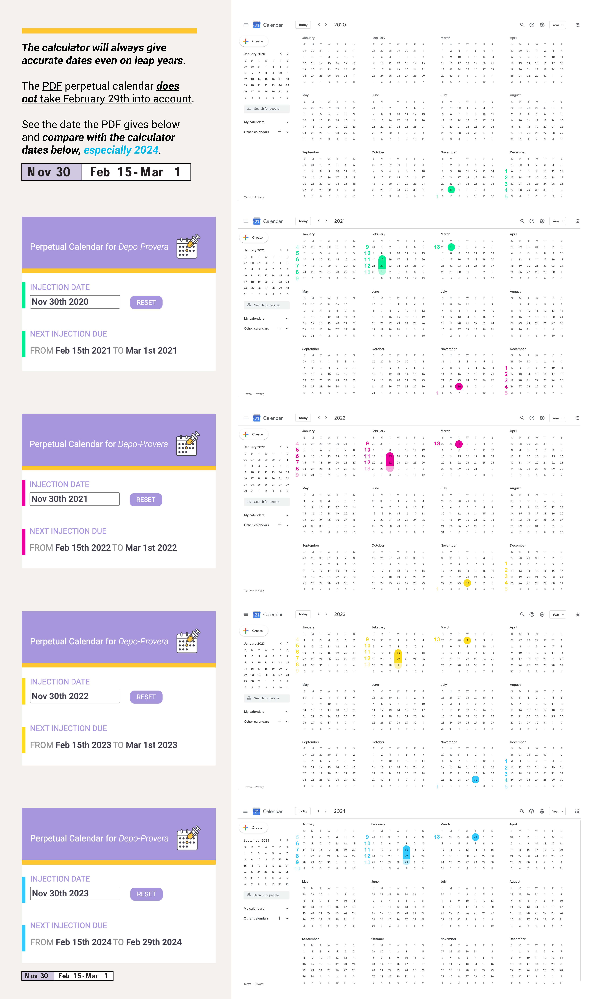

EMDixon-Roche Designs
A calculator for helathcare workers to work out when their patients need to have a follow-up Depo-Provera injection appointment (birth control).
End-to-end design and development.
In the end, I built a web-app and chrome-extension where nurses can copy and paste the patient follow-up date range directly into their forms.
Nurses administering Depo-Provera need to look up the date range the patient needs to come back for their follow-up injection. All nurses I spoke to and the nurses they knew, look up the date range on a PDF of the Depo-Provera perpetual calendar in a table format, either printed out or online. Nurses look up the dates multiple times a day, wasting a lot of time.
Shared laminated calendar printout

A nurse in passing complained about this time-consuming process. I saw the potential to create a product with an immediate value proposition for an existing client base–a simple calculator replacing the printout shared by nurses or looking up the PDF online.
There are two competing products:
The perpetual calendar PDF created by Pharmacia & Upjohn Company PDF is a two-sided printout of a table with a line for each date of the year with the corresponding date range. It is the most common method for finding the date range currently used by nurses.
Pros
Cons
In the "Depo calendar" app, the user inputs the injection date and gets corresponding dates for their follow-up appointment. It is only available to Apple users via the Apple Store and has 3.3 stars based on four ratings over five years.
"Depo calendar" in Apple Store

Pros
Cons
Three main areas of improvement would boost the product's chance of gaining market traction:
Analysis of the feedback from local nurses showed a universal consensus. They needed a simple calculator where they put in the date of the injection and were given the date range in a particular format they could copy and paste into their patients' forms.
None of the nurses I spoke to used the Depo calendar app. They all used and shared laminated PDFs. They said it was annoying to be always looking for the PDF or online. Each time they looked up dates throughout the day, the process was frustrating and inefficient. They could not believe an app or website did not already exist that did this, and the app that did exist did not satisfy their needs.
Text from nurse

Researching nurses' methods of looking up the date range and what they did with the date range, a couple of solutions immediately became apparent.
The user goal of looking up the date of the injection is to input the date range of the follow-up appointment into patient forms on their computer. Ideally, they do not need their phone, and they can copy and paste in one go date range directly into the patient form.
Although the nurses wanted an app as their solution, in reality, they just needed a way to access the calculator while they were on their computer. Ideation led me to conclude a web-app and Google chrome-extension would best suit their needs. The chrome-extension idea came from user research on the nurses of what browsers they and their peers use. Although all I spoke to use Google Chrome, it would be unreasonable to extrapolate this to the entire user population. Hence, the need for an additional web-app available across platforms.
As a healthcare product, I had to ascertain whether there would be any potential HIPPA issues. The calculator would not have any HIPPA hurdles since no patient data was stored or entered, only generic dates.
A nurse volunteered a mockup of their product design vision.
Post-it note design by nurse

Using the mockup as a jumping-off point, I distilled out the design essentials. Everything needed to be immediately viewable and accessible, having the least amount of information and words possible on the screen while still achieving the user end goal–date range of follow-up appointment.
Page of working through UX

To achieve the user goal–getting a date range–the on-screen information needed to have:
The UI needed to be simple. I created a mood board based on simple user interfaces and calm colors.
Moodboard created in Pinterest

My two competitors did not have clear branding. It was a clear opportunity for my product to stand out. By branding my product and therefore giving it an identity, it would have cross-platform recognition.
I created the logo first, informing the rest of the design brand. The two main words associated with the calculator are "injection" and "date." Luckily for me, these are two visual elements: a hypodermic needle and a calendar.
The main design requirement was "simple," but I felt a close second was "approachable." I made sure the needle looked as friendly as possible and used a calendar representation. During the design iteration, I saw a neat opportunity for the injection drop to represent the day of the injection.
Logo design iterations
Starting with a mobile-first design in grayscale, I then added the chosen color scheme, extrapolating to desktop design.
UI design iterations


To create the calculator, I needed to know what the calculation would be and how to perform it.
The date-range calculation was as follows:
January & February
Date Range
=
Date of injection + (11 weeks + 1 day)
+
Date of injection + (13 weeks)
Rest of Year
Date Range
=
Date of injection + (11 weeks)
+
Date of injection + (13 weeks)
jQuery UI API displayed the calendar and Moment.js API handled date calculations.
Once I had a low-fidelity prototype, I shared it with my tester group validating product concept before styling.
A problem glared in the high-fidelity prototype. It failed to achieve one of the original user goals: copy and paste the date range in one go. It was not possible on the mobile design.
I fixed this problem by making the layout responsive. The date range went on one line once there was enough screen space to do so. The title bar looked crammed on a wider screen, so that also got put into one line on the desktop.
Responsive site design


The UI feedback was favorable. However, there was one UX suggestion and one development issue.
Text from nurse

If the user is looking up multiple dates in one sitting, they need a reset button for the injection date. Otherwise, they start to waste time.
User testing occurred in 2020, a leap year, and I was not accounting for February 29th. During my QA and research, I discovered my competitors' products did not account for it either. Since this was a calculation, it would not only be necessary to correct but would mean my calculator would be the only 100% accurate product.
Leap years are part of the Moment.js API, so it would be possible to correct. Below is the correct calculation:
January & February of leap years
Date Range
=
Date of injection + (11 weeks + 1 day)
+
Date of injection + (13 weeks)
Rest of Year & non-leap years
Date Range
=
Date of injection + (11 weeks)
+
Date of injection + (13 weeks)
The nurses at the local hospital beta tested it for a month. There was only one problem. The original PDF created by the pharmaceutical company did not account for leap years and was wrong by one day depending on the month and year. But, since Pharmacia and Upjohn Company, an established company, created it, the nurses assumed it was right, and my calculator was wrong.
I created a document to give the user confidence in my calculator, showing full calendar years, screenshots from Pharmacia and Upjohn Company's PDF table, and screenshots from my chrome-extension. The document shows the week count on a real calendar, giving the user confidence.
User confidence PDF of full calendar years from 2020 to 2024 showing week numbers, comparing Pharmacia & Upjohn Company dates to my calculator dates
All through word-of-mouth marketing, in four and half months, both the web-app and chrome-extension each has 100+ returning visitors.
Depo-Provera perpetual calendar calculator Google Web Store analytics
Depo-Provera perpetual calendar calculator Google Analytics
Depo-Provera perpetual calendar calculator